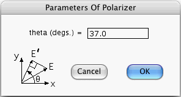

This window opens if you press the Generate Amplitudes... button of the Node Prior-Info. window when its focus node is a valid Polarizer. The window allows you to enter the angle theta between the X axis and the polarization axis. This angle is sufficient to characterize a Polarizer.
Even if the focus node is a Polarizer, when you press the Generate Amplitudes... button, the computer will refuse to open the above window unless:
Quantum Fog gives names of the form (Nx, Ny)Nloss to the states of the Polarizer. Nx, Ny and Nloss are non-negative integers. Nx refers to the number of outgoing photons polarized in the X direction, Ny to the number of outgoing photons polarized in the Y direction, and Nloss to the number of photons absorbed by the polarizer.
More information about Polarizers can be found in the document entitled "Quantum Fog Library Of Essays" that accompanies this manual.